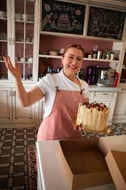
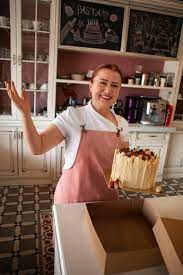

Mola Pastelería nació de una mezcla perfecta entre pasión, tradición y ganas de compartir momentos felices a través de la pastelería artesanal. Todo comenzó en una cocina familiar de Córdoba, donde entre batidoras, recetas heredadas y muchas ganas de crear, surgió la idea de transformar lo que era un hobby en un proyecto de vida. Lo que al principio fueron tortas para amigos y ferias barriales, se convirtió poco a poco en un espacio con identidad propia, donde cada producto cuenta una historia. Desde el primer día, nuestra misión fue clara: hacer pastelería con alma. No buscamos sólo que nuestras tortas y postres sean ricos, sino que también despierten emociones. Que la gente se sienta en casa, que cada dulce tenga ese "algo especial" que lo haga inolvidable. Hoy, Mola es una pastelería con un equipo apasionado detrás, que sigue creciendo sin perder su esencia: el amor por los detalles, la calidad de los ingredientes, y el compromiso con lo hecho a mano y a corazón abierto. Gracias por acompañarnos en este camino. Porque cada pedido, cada mensaje y cada sonrisa, nos recuerda por qué hacemos lo que hacemos. ¡Y esto recién empieza!
 
